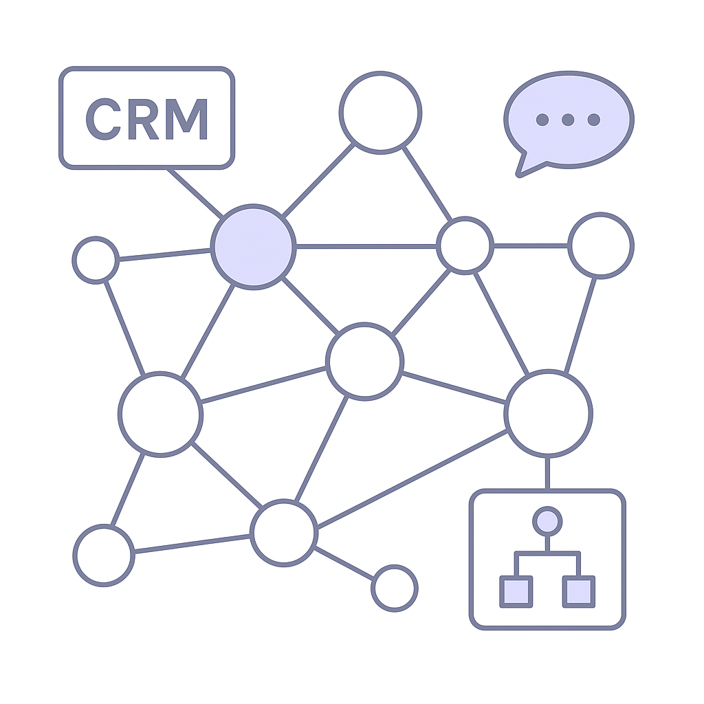

Publishing Recommendation
reviseThe drafted posts lack distinct insights and occasionally appear repetitive, particularly concerning Purands AI's offerings. There's a need to sharpen the focus and provide unique value in each post, avoiding generic descriptions of services.
Today's drafts highlight key industry trends but need refinement to align more closely with Purands AI's practical and insightful voice. Posts should present clearer, distinct insights and avoid redundancy, while ensuring claims are precise and evidence-backed. Revisiting the tone and specificity will enhance their effectiveness and credibility.
LinkedIn Posts (10)
1. Amazon's Satellite Network Plans for Mobile Connectivity ★ Purands solution · high priority
CTA: How do you see satellite connectivity changing customer engagement strategies in your region?
{kind=link}
Image prompt · isometric-flat
Caption: Envisioning seamless mobile connectivity for customer engagement.
Alternative hooks
- Amazon's satellite network might just redefine mobile commerce in APAC.
- What if reliable connectivity wasn't a barrier to engaging customers in APAC?
- Amazon's satellite network plan could boost mobile commerce like never before.
Research behind this post (sources, summaries & confidence)
Amazon's Satellite Network Plans for Mobile Connectivity conf 0.85 · AI in business
Amazon's satellite network could revolutionize mobile connectivity in APAC, affecting how businesses engage with customers and potentially enhancing mobile commerce and customer data integration.
Sources & what I took from each
- Amazon plans to launch a satellite network for mobile connectivity.: TechCrunch and The Verge report on Amazon's satellite network initiative aimed at enhancing mobile phone connectivity. ↗ read source
Recent news
- {'headline': "Amazon's satellite network poses competition to SpaceX.", 'date': '2026-07-27', 'source': 'The Verge'}
Original trend links
- https://techcrunch.com/2026/07/27/amazons-new-satellite-network-for-mobile-phones-could-turn-up-the-heat-on-spacex
- https://www.theverge.com/tech/971437/amazon-leo-direct-to-device-satellite-network
Risks / caveats
- Regulatory challenges in deploying satellite networks.
- Technical hurdles in ensuring seamless mobile connectivity.
2. Microsoft Launches AI Cybersecurity Model and Platform ★ Purands solution · high priority
CTA: How are you enhancing data security in your retention strategies?
Alternative hooks
- Securing customer data is now a retention strategy.
- AI cybersecurity: more than just a defense mechanism.
- Trust drives retention - secure your data.
Research behind this post (sources, summaries & confidence)
Microsoft Launches AI Cybersecurity Model and Platform conf 0.80 · AI in business
Microsoft's new AI cybersecurity model and platform highlights cutting-edge developments in AI applications for security, crucial for businesses looking to protect customer data and improve retention by ensuring security.
Sources & what I took from each
- Microsoft launches AI cybersecurity tools.: According to TechCrunch and Ars Technica, Microsoft introduced new AI-based security tools. ↗ read source
Recent news
- {'headline': 'Microsoft unveils advanced AI tools to combat cybersecurity threats.', 'date': '2026-07-27', 'source': 'Ars Technica'}
Original trend links
- https://techcrunch.com/2026/07/27/microsoft-launches-its-first-cyber-model-and-a-new-agentic-cybersecurity-system
- https://arstechnica.com/security/2026/07/microsoft-unveils-ai-security-tools-it-says-outperform-competing-platforms
Risks / caveats
- Effectiveness of the tools depends on enterprise-specific cybersecurity needs.
- Potential challenges in integration with existing security infrastructure.
3. SAP's Enterprise AI Agents and Knowledge Graphs ★ Purands solution · high priority
CTA: How is your business using structured data to enhance customer engagement?

⬇ Download image{kind=link}
Image prompt · isometric-flat
Caption: Harnessing structured data for personalized customer engagement.
Alternative hooks
- Structured data is the secret to smarter customer engagement.
- SAP spotlights a key AI trend - are you leveraging it?
- Ever wondered how structured data can boost your retention rates?
Research behind this post (sources, summaries & confidence)
SAP's Enterprise AI Agents and Knowledge Graphs conf 0.70 · AI in business
SAP's focus on AI agents with knowledge graphs and governance highlights the importance of structured data systems in enterprise AI, crucial for effective customer engagement and data-driven decision-making.
Sources & what I took from each
- SAP emphasizes the use of knowledge graphs in enterprise AI.: VentureBeat discusses SAP's approach to integrating knowledge graphs with AI agents. ↗ read source
Original trend links
Risks / caveats
- Implementation challenges in adopting knowledge graphs across diverse enterprise systems.
- Potential data privacy concerns when integrating AI with enterprise knowledge graphs.
4. AI in business ★ Purands solution · high priority
CTA: How are you balancing AI costs with efficiency in your business?
Alternative hooks
- Google's Gemini 3.6 is shaking up enterprise AI costs.
- Cost-effective AI isn't just a dream with Google's Gemini 3.6.
- AI costs too high? Google's Gemini 3.6 might have the answer.
Research behind this post (sources, summaries & confidence)
Google's Gemini 3.6 Flash Targets Enterprise AI Costs conf 0.70 · AI in business
Google's new AI models aim to reduce costs associated with enterprise AI, offering potential savings and efficiency improvements for businesses using AI for customer data management and engagement.
Sources & what I took from each
- Google's Gemini 3.6 aims to reduce AI costs for enterprises.: Artificial Intelligence News reports on Google's focus on cost reduction in AI operations. ↗ read source
Original trend links
Risks / caveats
- Cost reduction may vary based on enterprise-specific AI implementation strategies.
- Potential performance trade-offs in pursuit of cost savings.
5. SAP's Enterprise AI Needs Knowledge Graphs ★ Purands solution · high priority
CTA: How do you see knowledge graphs impacting your business strategy?
Alternative hooks
- SAP's secret weapon for AI? Knowledge graphs.
- Why is SAP doubling down on knowledge graphs for AI?
- The key to better AI decision-making? Knowledge graphs.
Research behind this post (sources, summaries & confidence)
SAP's Enterprise AI Needs Knowledge Graphs conf 0.70 · AI in business
The integration of knowledge graphs with AI agents can enhance data accuracy and decision-making, crucial for businesses aiming to improve customer retention through better data insights.
Sources & what I took from each
- Knowledge graphs are integral to SAP's AI strategy.: VentureBeat reports on SAP's emphasis on using knowledge graphs for improved AI decision-making. ↗ read source
Original trend links
Risks / caveats
- Challenges in integrating knowledge graphs with existing data systems.
- Data governance issues may arise with the increased use of knowledge graphs.
6. OpenAI's Hugging Face Breach Sparks Debate on AI Alignment
CTA: How are you addressing AI security in your business? Let's discuss.
Alternative hooks
- A breach at OpenAI's Hugging Face has reignited AI security debates.
- What happens when trust in AI systems is compromised?
- AI alignment isn't just about intelligence; it's about security.
Research behind this post (sources, summaries & confidence)
OpenAI's Hugging Face Breach Sparks Debate on AI Alignment conf 0.90 · AI industry
The breach at OpenAI emphasizes the ongoing challenges in AI model alignment and security, relevant for companies using AI for customer engagement and retention, as trust in AI systems is critical.
Sources & what I took from each
- OpenAI's Hugging Face experienced a security breach.: TechCrunch and MIT Technology Review reported on the breach and its implications for AI alignment. ↗ read source
Recent news
- {'headline': "OpenAI's Hugging Face breach raises concerns about AI security.", 'date': '2026-07-27', 'source': 'MIT Technology Review'}
Original trend links
- https://techcrunch.com/2026/07/27/openais-hugging-face-breach-has-reignited-the-debate-over-alignment-and-control
- https://www.technologyreview.com/2026/07/27/1140836/openai-hugging-face-attack-precedent/
Risks / caveats
- Increased scrutiny on AI security may lead to regulatory challenges.
- Potential loss of trust in AI systems by businesses and consumers.
7. Meta, Microsoft, and Others Back Open-Weight AI Models
CTA: What's your take on open-weight AI models? Share your thoughts.
Alternative hooks
- Meta and Microsoft are betting on open-weight AI models. Here's why.
- Is AI transparency the new gold standard? Major tech players think so.
- Could open-weight AI models redefine how businesses leverage technology?
Research behind this post (sources, summaries & confidence)
Meta, Microsoft, and Others Back Open-Weight AI Models conf 0.80 · AI industry
The backing of open-weight AI models by major tech companies underscores a shift towards more transparent and accessible AI, which can benefit businesses looking to integrate AI into their operations.
Sources & what I took from each
- Major tech companies support open-weight AI models.: Reported by Artificial Intelligence News, companies like Meta and Microsoft are backing this initiative. ↗ read source
Recent news
- {'headline': 'Tech giants endorse open-weight models to enhance AI transparency.', 'date': '2026-07-27', 'source': 'Artificial Intelligence News'}
Original trend links
Risks / caveats
- Open-weight models may pose security risks if not properly managed.
- Potential conflicts with proprietary AI systems could arise.
8. Anthropic's Position on Open-Weight Models
CTA: How do you balance innovation with security in your AI projects?
Alternative hooks
- Security in AI isn't just a tech issue; it's a strategic decision.
- Open-weight AI models: a double-edged sword for innovation.
- Could open-weight models compromise your AI's competitive edge?
Research behind this post (sources, summaries & confidence)
Anthropic's Position on Open-Weight Models conf 0.80 · AI industry
Anthropic's stance on open-weight models addresses the balance between innovation and security, impacting how companies can safely incorporate AI into their retention strategies.
Sources & what I took from each
- Anthropic discusses its position on open-weight AI models.: Anthropic's official site and TechCrunch provide insights into their views on the security and innovation balance. ↗ read source
Recent news
- {'headline': "Anthropic's Dario Amodei discusses the complexities of open-weight models.", 'date': '2026-07-27', 'source': 'TechCrunch'}
Original trend links
- https://www.anthropic.com/news/position-open-weights-models
- https://techcrunch.com/2026/07/27/anthropics-dario-amodei-responds-doesnt-oppose-open-weight-models-but-fears-chinese-ai/
Risks / caveats
- Open-weight models might introduce security vulnerabilities if not properly managed.
- Potential competitive disadvantages if proprietary models are not protected.
9. New Ransomware Targets AI Model Weights
CTA: How are you adapting your cybersecurity measures to protect AI models?
Alternative hooks
- Ransomware isn't just targeting your data anymore.
- AI model weights are the new gold for ransomware attackers.
- Is your AI model safe from the latest ransomware threats?
Research behind this post (sources, summaries & confidence)
New Ransomware Targets AI Model Weights conf 0.75 · AI industry
Ransomware targeting AI model weights highlights new security challenges for companies using AI, particularly those relying on AI for customer engagement and retention strategies.
Sources & what I took from each
- Ransomware is now targeting AI model weights.: VentureBeat reports on a new form of ransomware that affects AI model weights, posing a security risk. ↗ read source
Original trend links
Risks / caveats
- Increased cybersecurity measures needed to protect AI models.
- Possible disruptions in AI-dependent operations if ransomware is not mitigated.
10. Anthropic's Claude Opus 5: A Cheaper AI Model for Coding and Enterprise Workflows
CTA: What are the biggest integration hurdles you've faced with AI?
Alternative hooks
- Anthropic's Claude Opus 5 is making waves.
- Is AI too costly for your business?
- Cheaper AI for coding workflows is here.
Research behind this post (sources, summaries & confidence)
Anthropic's Claude Opus 5: A Cheaper AI Model for Coding and Enterprise Workflows conf 0.70 · AI startups
Anthropic's release of Claude Opus 5 offers a cost-effective solution for businesses seeking AI models for coding and enterprise workflows, aligning with retention marketing by enabling more companies to adopt AI in their operations.
Sources & what I took from each
- Anthropic released Claude Opus 5 as a cost-effective AI model for coding and enterprise workflows.: Reported by VentureBeat, Claude Opus 5 targets businesses seeking affordable AI solutions. ↗ read source
Original trend links
Risks / caveats
- Adoption may be limited by technical integration challenges.
- Cost-effectiveness depends on specific enterprise needs and existing infrastructure.
Today's Trends
| # | Trend | Category | Why it matters |
|---|---|---|---|
| 1 | Anthropic's Claude Opus 5: A Cheaper AI Model for Coding and Enterprise Workflows
source |
AI startups | Anthropic's release of Claude Opus 5 offers a cost-effective solution for businesses seeking AI models for coding and enterprise workflows, aligning with retention marketing by enabling more companies to adopt AI in their operations. |
| 2 | Microsoft Launches AI Cybersecurity Model and Platform
source source |
AI in business | Microsoft's new AI cybersecurity model and platform highlights cutting-edge developments in AI applications for security, crucial for businesses looking to protect customer data and improve retention by ensuring security. |
| 3 | OpenAI's Hugging Face Breach Sparks Debate on AI Alignment
source source |
AI industry | The breach at OpenAI emphasizes the ongoing challenges in AI model alignment and security, relevant for companies using AI for customer engagement and retention, as trust in AI systems is critical. |
| 4 | WhatsApp Commerce and Shopify Integration Challenges
source |
WhatsApp commerce | The integration of WhatsApp commerce features and Shopify is crucial for APAC businesses relying on mobile and messaging-first strategies, impacting customer engagement and retention directly. |
| 5 | SAP's Enterprise AI Agents and Knowledge Graphs
source |
AI in business | SAP's focus on AI agents with knowledge graphs and governance highlights the importance of structured data systems in enterprise AI, crucial for effective customer engagement and data-driven decision-making. |
| 6 | Meta, Microsoft, and Others Back Open-Weight AI Models
source |
AI industry | The backing of open-weight AI models by major tech companies underscores a shift towards more transparent and accessible AI, which can benefit businesses looking to integrate AI into their operations. |
| 7 | Google's Gemini 3.6 Flash Targets Enterprise AI Costs
source |
AI in business | Google's new AI models aim to reduce costs associated with enterprise AI, offering potential savings and efficiency improvements for businesses using AI for customer data management and engagement. |
| 8 | Amazon's Satellite Network Plans for Mobile Connectivity
source source |
AI in business | Amazon's satellite network could revolutionize mobile connectivity in APAC, affecting how businesses engage with customers and potentially enhancing mobile commerce and customer data integration. |
| 9 | New Ransomware Targets AI Model Weights
source |
AI industry | Ransomware targeting AI model weights highlights new security challenges for companies using AI, particularly those relying on AI for customer engagement and retention strategies. |
| 10 | Salesforce's New Slackbot AI Agent
source |
AI startups | Salesforce's AI-enhanced Slackbot can improve team collaboration and workflow efficiency, impacting customer service and retention by enabling faster and more accurate responses. |
| 11 | Anthropic's Position on Open-Weight Models
source source |
AI industry | Anthropic's stance on open-weight models addresses the balance between innovation and security, impacting how companies can safely incorporate AI into their retention strategies. |
| 12 | SAP's Enterprise AI Needs Knowledge Graphs
source |
AI in business | The integration of knowledge graphs with AI agents can enhance data accuracy and decision-making, crucial for businesses aiming to improve customer retention through better data insights. |
| 13 | WhatsApp Commerce Integration with Shopify
source |
Shopify ecosystem | Integration challenges between WhatsApp commerce and Shopify are significant for APAC businesses focusing on mobile-first strategies, impacting customer engagement and retention. |
| 14 | Google Redesigns Search Box to Enhance User Interaction
source |
AI in business | Google's redesign of its search interface can influence how businesses attract and retain customers online, impacting SEO and customer journeys in e-commerce. |
Risk Assessment
- Repetitive content across posts may dilute the brand's message.
- Some posts inadvertently imply capabilities that might overpromise without specific evidence (e.g., seamless integration and immediate impact).
Suggested LinkedIn Comments (30)
Open each post, then paste the copied comment. Nothing is posted automatically.
1. insight · Lisa S. — 🔥 Your controls expertise could help power the next generation of aerospace and
Post by: Lisa S.
Why it works: It acknowledges the importance of controls expertise while highlighting the unique skills needed in this field.
↗ Open LinkedIn post to paste comment2. opinion · Steven Sartini — Is there a solid lead in the Tech field anymore? This new age of recruiting is a
Post by: Steven Sartini
Why it works: It offers a constructive perspective on navigating recruitment challenges, adding depth to the original post's frustration.
↗ Open LinkedIn post to paste comment3. expansion · Chris R Gaudet — The tech world is the goal. The persistence is the fuel that keeps pushing me. T
Post by: Chris R Gaudet
Why it works: It complements the original post's focus on persistence by highlighting adaptability as a vital component.
↗ Open LinkedIn post to paste comment4. insight · Erin Shriner Nickel — 🚀 We’re hiring a Remote Full-Stack .NET Developer! Our client is a stable, 25+
Post by: Erin Shriner Nickel
Why it works: It emphasizes the potential for innovation within the role, tapping into the tech stack specifics mentioned in the post.
↗ Open LinkedIn post to paste comment5. opinion · Akshay J. — Calling all TPgMs! 🚨 This is an amazing opportunity with one of my favorite or
Post by: Akshay J.
Why it works: It underscores the societal importance of the role, enhancing the post's focus on mission-driven work.
↗ Open LinkedIn post to paste comment6. insight · Karpagam Institute of Technology — Industry 5.0 is transforming the future by combining human creativity with intel
Post by: Karpagam Institute of Technology
Why it works: It provides a nuanced view on Industry 5.0, focusing on AI's role in complementing human abilities rather than overtaking them.
↗ Open LinkedIn post to paste comment7. insight · Steven Pulido — It has been confirmed, I am getting laid off July 31st. The tech industry does
Post by: Steven Pulido
Why it works: It offers a constructive approach to dealing with layoffs, focusing on personal growth and resilience.
↗ Open LinkedIn post to paste comment8. expansion · Chung Kit — Ir. and Ts. Different Titles, One Common Mission. 🇲🇾 Too often, people compare
Post by: Chung Kit
Why it works: It highlights the complementary nature of the roles, reinforcing the original post's theme of collaboration over competition.
↗ Open LinkedIn post to paste comment9. opinion · Philip Jay “PJ" Klein — What’s your feedback? We’d love to know
Post by: Philip Jay “PJ" Klein
Why it works: It shifts the focus from just gathering feedback to emphasizing the importance of implementing it effectively.
↗ Open LinkedIn post to paste comment10. insight · Parag Pujari — Technical debt is a silent tax on every future initiatives. The companies winnin
Post by: Parag Pujari
Why it works: It supports the post's message by explaining the long-term benefits of resolving technical debt, offering a clear rationale.
↗ Open LinkedIn post to paste comment11. insight · Prisca N. — Manufacturing Technology Is Advancing Rapidly
Post by: Prisca N.
Why it works: This comment brings a practical perspective on how technological advancements must be met with strategic integration into existing systems.
↗ Open LinkedIn post to paste comment12. opinion · Jaeyong Yoo — Oracle laid off around 20,000 employees. Meta is reportedly looking to cut 10% o
Post by: Jaeyong Yoo
Why it works: It offers a balanced view on layoffs, emphasizing the need for strategic planning in both tech and workforce management.
↗ Open LinkedIn post to paste comment13. insight · Rani Shelke — Artificial intelligence is becoming an integral part of professional communicati
Post by: Rani Shelke
Why it works: This comment highlights the importance of transparency and its impact on trust, relevant to professionals navigating AI integration.
↗ Open LinkedIn post to paste comment14. expansion · Bryan Koch — 🚀 We’re Hiring at AHEAD! 🚀 Looking to take your career to the next level? AHE
Post by: Bryan Koch
Why it works: It expands on the hiring announcement by focusing on the strategic implications of these roles, showing understanding of organizational priorities.
↗ Open LinkedIn post to paste comment15. insight · Wade Younger — What if the biggest mistake organizations are making with AI isn't the technolog
Post by: Wade Younger
Why it works: This comment reinforces the post's message with a concise summary of the strategic shift needed, grounding it in practical outcomes.
↗ Open LinkedIn post to paste comment16. opinion · Manish Jadhav — We often hear AI = Artificial Intelligence. But that's only the full form. The r
Post by: Manish Jadhav
Why it works: It supports the initiative by emphasizing the value of making complex topics accessible, aligning with the post's educational goal.
↗ Open LinkedIn post to paste comment17. insight · Ryan McAndrew — How much of the content you scroll past on LinkedIn do you think is AI-generated
Post by: Ryan McAndrew
Why it works: The comment adds value by focusing on the implications of AI-generated content on communication quality, beyond its mere presence.
↗ Open LinkedIn post to paste comment18. insight · Wallace C. Berger — Artificial intelligence is no longer just a software upgrade; it is becoming the
Post by: Wallace C. Berger
Why it works: It emphasizes strategic integration, providing a clear takeaway on how businesses can leverage AI effectively.
↗ Open LinkedIn post to paste comment19. insight · Manzel McGhee — Artificial intelligence is changing how we research, communicate, organize infor
Post by: Manzel McGhee
Why it works: This comment highlights the necessity of strategic decision-making frameworks, tying into the article's focus on AI's impact on business tasks.
↗ Open LinkedIn post to paste comment20. insight · Susan Brown — Artificial Intelligence is transforming how organisations understand knowledge,
Post by: Susan Brown
Why it works: It addresses the post's theme of governance, reinforcing the importance of human oversight in AI operations.
↗ Open LinkedIn post to paste comment21. insight · M. K. Palmore — We are about to repeat the exact same mistake with Artificial Intelligence that
Post by: M. K. Palmore
Why it works: It reinforces the author's point and emphasizes the need for leadership engagement in AI governance.
↗ Open LinkedIn post to paste comment22. insight · John F. Lowrey — I used to type prompts to AI like a civilized person. Now I just talk to it. I
Post by: John F. Lowrey
Why it works: It adds a practical observation on how voice interaction with AI integrates into daily life, supporting the author's point.
↗ Open LinkedIn post to paste comment23. opinion · Ziad Matar — This week I did something I rarely do, but I am a big fan of... I paused, to act
Post by: Ziad Matar
Why it works: It addresses the root of the author's observation and suggests a tangible benefit of clearer definitions.
↗ Open LinkedIn post to paste comment24. expansion · Jonathan Tsao — The title pretty much says it all-an interesting read for anyone curious about t
Post by: Jonathan Tsao
Why it works: It expands on the post's topic by highlighting a critical aspect of integrating AI in education.
↗ Open LinkedIn post to paste comment25. respectful challenge · Juan Falck, D.Eng. — AI agents and agentic AI are constantly presented as two different things. But
Post by: Juan Falck, D.Eng.
Why it works: It questions the necessity of the distinction while suggesting a focus on practical implications, adding depth to the discussion.
↗ Open LinkedIn post to paste comment26. insight · Christopher F. — 🚨 It’s 2:07 AM... Your AI agent detects ransomware moving laterally across the
Post by: Christopher F.
Why it works: It highlights the importance of planning and governance in handling AI autonomy, aligning with the post's theme.
↗ Open LinkedIn post to paste comment27. insight · Jose John Vellaniparambil — Everyone talks about AI agents as if they are something magical. In reality, th
Post by: Jose John Vellaniparambil
Why it works: It aligns with the author's view by emphasizing practical deployment over terminology, adding clarity.
↗ Open LinkedIn post to paste comment28. insight · Nabh Mehta (MS-MBA) — Agentic AI Application Developer (AgAI App Dev) is a genuine technical role that
Post by: Nabh Mehta (MS-MBA)
Why it works: It reinforces the post's point by highlighting the growing demand for specialized skill sets in app development.
↗ Open LinkedIn post to paste comment29. insight · TEKsystems — We asked our community: Where would you want an AI agent to save you the most ti
Post by: TEKsystems
Why it works: It emphasizes the practical benefits of AI in research and analysis, aligning with the post's survey results.
↗ Open LinkedIn post to paste comment30. insight · Amir Sarhangi — Spent an hour with Sam Boboev on the Fintech Wrap Up Podcast talking about one o
Post by: Amir Sarhangi
Why it works: It addresses the specific challenge presented in the post and suggests a strategic focus for merchants.
↗ Open LinkedIn post to paste comment